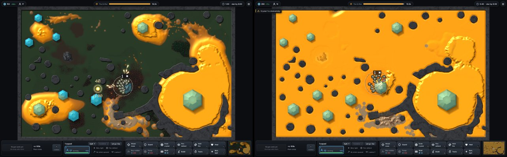
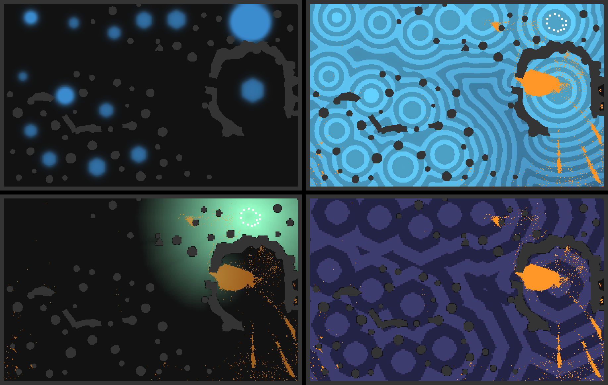
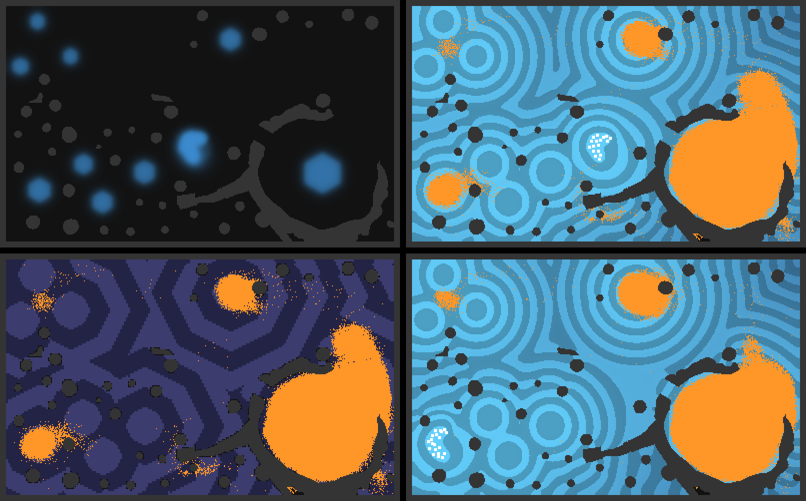
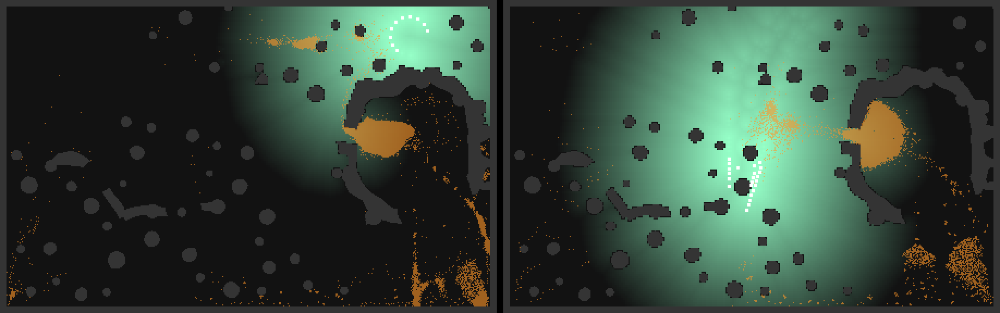

Scents and trails
How Plasmodia's slime smells its way around: what holds up, what does not, and ten ideas to play with it. A review of main after #901, 28 November 2026.
The short answer. The physics is sound and cheap for what it does, with one real bug: on clay, a trail keep above 0.952 grows without limit and the whole map turns to slime.
The bigger issue is design. One short-lived smell (half of it gone in 0.76 s) does every job. Your squad is the loudest thing on the map. The strongest pulls (lure, hunt, wave, far smell) come from walking-distance maps the player never sees, and those maps send the slime down the one shortest gap, straight into your guns.
Smell is the slime's whole sense of the world, and today it is almost invisible and hard to play against. The best next step is to make the slime route round your guns (idea 3), then make what it follows visible and counterable (ideas 4 and 5).
1. How the fields work today
Every engine step (30 a second at scale 2), each GPU field is averaged over its 3x3 neighbours and multiplied by a keep. That gives every field two numbers that decide how it plays: a half-life and a spread length, which is how far smell spreads before it fades (the square root of D over the loss rate, with D = 1/3 cell² a step). A fine cell is half a dish cell.
Walkers read three points ahead (front, left, right) and turn toward the biggest reading. Only which reading is bigger matters, never by how much (Jones's rule). Every field a walker reads is added into one number per sensor: trail, plus food smell times hunger, plus alarm, scar and crust with their weights. On top of that, the CPU builds walking-distance maps round the walls once a second, and walkers lean down them.
| GPU field | Laid by | Half-life | Spread | Read by | Player sees |
|---|---|---|---|---|---|
| Trail | every walker as it moves; blocked walkers, spores and sleepers lay their own amounts | 0.10–0.45 s (keep 0.8–0.95 by tier) | 1.2–2.5 cells | the three sensors, 6 to 18 cells ahead by tier | the slime's body is drawn from it |
| Food smell | crystals (20 a cell a step, 15% once touched, times what is left), soldiers, lures, pumps, the larder, outposts, Bait shots | 0.76 s (keep 0.97) | 3.3 cells | the sensors 36 cells ahead, times hunger | only the F2 view |
| Alarm | hit and dying walkers, spores; relayed by the Sleeper | 1.1 s on alarm tiers (keep 0.98) | 4.1 cells | alarm tiers, weight 3 | nothing direct |
| Scar (Grudge) | 1% of the alarm, per cell | 3.9 min (keep 0.9999) | none | Grudge walkers, weight 0.5 | the Grudge readout |
| CPU walking-distance map | Source | How strong (weight) | Refresh | Player sees |
|---|---|---|---|---|
| Far smell | fresh crystals | 1, for walkers at least half hungry | every 2 s | no |
| Lure | Lure buildings | 10 ("one number for every tier") | every 1 s | the lure rings |
| Hunt (#895) | the squad's recent places, aged at 4 dish cells a second, out to 80 | 0, 10, 18, then 30 by the run's curve | every 1 s | no |
| Wave | the gather point, then the strike target | 40 | every 1 s | no |
| Raid, units | raid targets; your units | panic and raid branches | every 1 s | no |
All the maps are Dijkstra on 2x2 blocks with 16 neighbours, exact to a fifth of a block. A walker leans by weight times (distance here minus distance at its sensor).
2. Findings
BugTrails on clay blow up when keep passes 0.952
The trail pass computes mean × keep × soil_keep, and clay's soil keep is 1.05 (engine.wgsl lines 2624 and 2644, big.rs line 1704). On clay, any keep at or above 1/1.05 = 0.952 multiplies the trail every step instead of fading it. The Trunk (keep 0.95) runs at 0.9975 on clay, a quarter of a percent from the edge. The slime viewer's keep slider goes up to 0.999, and slime-tweaks.txt carries it into the game.
With keep 0.99 on planet 1 the trail peaked at 1.5e7 at 0:10, 5.6e14 at 0:25 and 2.1e22 at 0:40. By then 80,941 cells were over 10,000 and the whole planet drew as slime.

Fix: cap the product, for example min(keep × soil_keep, 0.998), in both places. At 0.998 no shipped tier changes. This is one line in the Enemy lane's file, and I've sent it to them.
At today's keeps, clay also shapes the look: the Drifter's 0.93 becomes 0.977 on clay, so the trail under walkers on planet 1 sits near 200 (median 199, top 212) while it is 13 to 34 on planet 2. That's fine, but a tier's keep does about twice as much on clay as elsewhere.
DesignOne brief smell does every job, and the squad drowns the crystals
Crystals, soldiers, lures, pumps, the larder, outposts and Bait shots all pour into one food smell with one keep. Half of any smell is gone in 0.76 s, and in that time it spreads only 3.3 fine cells, yet walkers sniff it 36 cells ahead. A walker at a crystal's edge sniffs 36 cells out, where the smell is about a hundred-thousandth of the smell at the edge (chart). Walkers still find it because they compare readings rather than measure them: 1e-12 beats 1e-13. So the long reach works, through numbers too small for anything to show.
Smell of one untouched crystal, after it settles
Smell against distance from the crystal's centre, log scale; a crystal of radius 12 fine cells laying 20 a cell a step, keep 0.97.
We have already met the consequences. Soldiers' smell is gone about a second after they move (Lab hunt report), so the slime cannot track a squad by smell. Bait and Smother showed nothing until they were buffed, and the pump needed 20 times the smell. A stronger, wider soldier smell did not help the slime catch a kiting squad either (dead end, 11-26).
Meanwhile the squad is the loudest source on the map. Its soldiers' smell discs overlap and add up: 14 soldiers on planet 2 at 1:00 peaked at 4,136, and 23 at 2:00 at 5,253. A crystal smells 540 to 870 untouched and 85 to 96 once the slime has touched it. Near both, walkers turn to the squad.
PhysicsThe far smell is already in the scent, in its exponent
A blur that fades at a fixed rate is the heat method for distance (Varadhan 1967; Crane, Weischedel and Wardetzky 2013): minus the log of the field, times the spread length, approximates the walking distance round walls. So the GPU food smell already holds a far smell, with no lag.
I checked it against the CPU far smell, block by block. Ranking every block by minus log smell and by walking distance agrees closely: Spearman 0.87 to 0.93 on planet 1 (0:30 to 1:30) and 0.69 to 0.79 on planet 2 (0:30 to 2:00). Planet 2 is lower because the squad's smell pulls the map off the crystals. Off the slime's body, uphill in log smell points within 45° of the far smell's downhill on 83 to 90% of planet 1's blocks and 81 to 92% of planet 2's. The fitted slope on planet 1 is 0.25 to 0.27 per fine cell against 0.30 in theory.
Almost every open cell (99.8%) holds some smell; the smallest is 4e-20 on planet 1 and 6e-18 on planet 2. Nothing gets near the float's floor, so the CPU and GPU agree. The F2 view's byte shows smell of 0.24 and up, which is 24 to 29% of open ground on planet 1 and 30 to 36% on planet 2.

The same four maps on planet 1

DesignThe walking-distance maps steer hardest, can't be seen, and send everything through one gap
A walker leans by weight times (distance here minus distance at its sensor), and that difference can be at most the sensor's reach. So one weight gives a different pull on each tier. LURE_PULL 10 is "one number for every tier" in run.rs, but it leans about 60 on planet 2 (reach 6) and 180 on planets 1 and 4 (reach 18). The hunt leans about 60 on planet 2 and about 340 on planet 4. A touched crystal smells about 90, so inside its range a lure, hunt or wave beats food.
The hunt map is not a trail. It is a disc about 80 dish cells round the squad's recent places: 21% of planet 2 at 0:30 and 1:00, and 60% at 2:00. Every shortest path through the walls runs through the same gaps, so a hunt or wave arrives on one front, through the narrowest place, into the guns. The Lab's hunt report saw that, and kiting lost no soldiers.

The maps cost CPU, not GPU (the units map takes 7.4 ms on planet 8, off the frame), and lag 1 to 2 s. Only the lure has rings on screen.
CostThe two passes are over a third of the step, and most of it is re-reading
One GPU step on planet 8, by pass
GTX 1070, every pass timed alone, after the walker sort; total 5.27 ms (Lab walker-sort report, 24 Nov).
The walker sort made every per-walker pass faster; the per-cell passes did not move. Each cell's trail sums 9 neighbours, and for every neighbour it reads that neighbour's deposit counters again: moved walkers, blocked walkers, spores and sleepers once the slime has a life cycle, the capped count, the alarm relay. That is about 63 to 81 reads a cell, many of them atomic. The scent pass reads each neighbour's crystal, touched flag and what is left: about 45 reads, plus 12 atomic clears.
Fold, then blur. A cheap pass first adds each cell's own deposit into its own trail (and alarm, and smell) and clears the counters. The blur then reads 9 plain floats. The float operations are the same, in the same order, so done with care the result stays bit-identical and the CPU twin tests stay green. My estimate is about half the cost, around 1 ms a step on planet 8, which needs a timing on the 1070. Test 5 held at a p95 of 16.4 ms against 16.7, and bigger raids and Hard sizes have landed since, so a millisecond matters. Tiling the blur in shared memory could follow.
SoundOtherwise stable and well behaved
- Each blur is an average times a keep below 1, so every field fades (clay aside). Map edges absorb, walls average over open neighbours only, and smell passes only through walls marked to let it.
- No smell gets near the float's floor on planets 1 and 2, so there are no subnormals and no CPU/GPU difference from them.
- Jones's rule is robust: it ignores each field's scale, which is why tiny far smells still steer. It also means a weight only matters where two fields meet.
- Once touched, a crystal keeps the dimmed smell (15%) for the rest of the planet; I found no reset.
ReadabilityThe player sees the trail and the lure rings, nothing else
The smell, the alarm, the hunt, the wave's gather point and the far smell are all invisible, except in the F2 view, which shows about a third of the map. So when the slime turns toward the squad, splits, or pours through a gap, the reason is not on screen. The owner's rule is that everything on screen is the simulation. The other side of that rule is the opportunity: much of the simulation is not on screen.
3. Ten ideas, ranked
Ranked by what they do for play against what they cost. The first two change nothing you'd notice in play; the rest are game changes that need Scott's yes before they go into the game.
FixCap clay's keep
Cap the trail's keep times soil keep at 0.998, in both places. No shipped tier changes, and the viewer can no longer break a planet.
SpeedFold, then blur
Add each cell's own deposit first, then blur plain floats. Bit-identical, about 1 ms a step on planet 8 by estimate, and every new field after it is cheaper too.
PlayFlanking: the slime routes round your guns
Make the hunt, wave and units maps cost more to walk where your guns reach, or where walkers recently died (the alarm, or the Grudge's scar). Shortest paths then bend round the kill zone. The slime comes round the sides of a turret line and through two gaps instead of one, and probes for the gap you didn't wall.
This answers Scott's 11-28 notes that the game is too easy to beat (he didn't need turrets, and "difficulty needs to be kicked up another notch") and the Lab's one-front finding without adding more slime. The Dijkstra already exists, and it only needs a cost per block. Dial it per planet like the hunt's pull.
LookDraw what the slime follows
Show the hunt as spoor: faint, stained tracks behind the squad, fading by age, drawn straight from the hunt map's values. Show the wave's gather point as a smell that swells before it strikes, and the alarm as a ripple through the body. It is all data already on the GPU, so it keeps to "the picture is the data".
PlaySmell channels and palates
Split the one smell into food, prey (soldiers and buildings) and bait, each with its own keep. A prey smell that lasts about 10 s makes a real track the slime can follow, and one the player can fight: water washes it, fire burns it, Smother wipes it, a Mask card hides it, a Decoy lays it. Each tier gets a palate: the Drifter loves bait, the Swarmer hunts prey, the Sleeper wakes only to alarm. Crystals stop being drowned by the squad.
SpeedA free far smell from the log of the food smell
Read minus log of the food smell as the far smell, retiring the CPU far map and its 2 s lag. It needs idea 5 first, so the squad doesn't bend it. The log of a prey channel gives the units map the same way.
PlaySmell on the wind
The Lab's wind twist already exists. Carry smell downwind each step (shift it along the wind before the blur). Come from downwind and the slime can't smell you; a lure upwind pulls it across the map.
PlayLost crystals call the slime back
Once touched, a crystal smells at 15% for the rest of the planet. Reset that after some seconds with no slime on it, so a crystal you take back starts calling the slime again. Holding ground becomes a fight, not a one-off.
SpeedWalking-distance maps on the GPU
Relax distance a few times each step (each cell takes the smaller of its own distance plus the lag, or a neighbour's plus a step), with sources at zero. No Dijkstra and no lag, and the units map's 7.4 ms of CPU on planet 8 goes. Flank costs from idea 3 become a texture read.
BoldIdeas from the model
- Veins by flow. Walkers that have eaten lay more (the tube rule of Tero et al. 2010). Busy routes thicken into arteries the squad can cut to starve the far side. The Lab's veins prototype (11-19) found nothing inside a packed body that builds on itself; food carried along a route might be that thing (untested).
- Memory of where it has been. Real slime mould avoids its own old slime (Reid et al. 2012). A negative weight on the crust makes the slime sweep new ground rather than retread old, and leaves a visible map of where it searched.
- Noise. Shots lay alarm or prey smell where they are fired, so loud guns draw the slime and quiet ones don't: a gun trait with a cost.
- A stealth meter. A squad standing still builds a pool of smell, and a moving squad spreads it thin. Dig in, and you get found.
4. What I recommend
- Now, with no change to play: idea 1 (Enemy) and idea 2 (Enemy with Engine and tools). I've sent the clay bug to the Enemy lane.
- First prototype: idea 3, flanking, in a Lab branch on planets 1 to 4. The measures are soldiers lost and how many fronts the slime arrives on, on paired seeds, set before the run. It is the cheapest change that attacks "too easy" directly.
- Then ideas 4 and 5 together: visible spoor on a prey channel, which makes the hunt both readable and something you can fight, and opens Mask and Decoy cards.
Scott has the choice of which to prototype first in the thread. Nothing here goes into the game without his yes.
5. How this was measured
- Main at
351dcd5(after #901), planets 1 and 2, run seed 1,hand=greedy, headless on software Vulkan. Fields dumped at 0:30, 1:00, 1:30 (planet 1) and 0:30, 1:00, 2:00 (planet 2). - A scratch patch (
scent-dump.patch, not for merging) wrote the GPU trail, smell, alarm and walker counts, and the CPU far smell, lure and hunt maps.analyse.pymeasures them and draws the maps;theory.pygives the half-lives, spreads and a lone crystal's profile. - The clay test:
larder-world run=1:1 mode=squads hand=greedy keep=0.99 at=10,25,40. - GPU timings are the Lab's from the 1070 (Reports/lab-walker-sort-2026-11-24); none were taken here. Cloud runs are for checking only, never timing.
Sources and scripts: Reports/scent-review-2026-11-28/ in the repo.